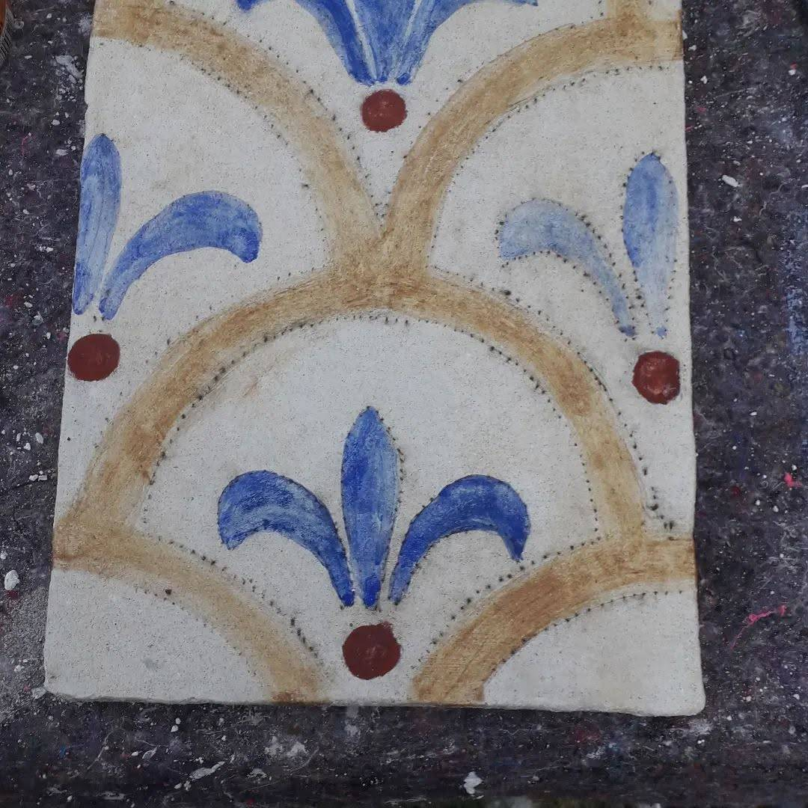
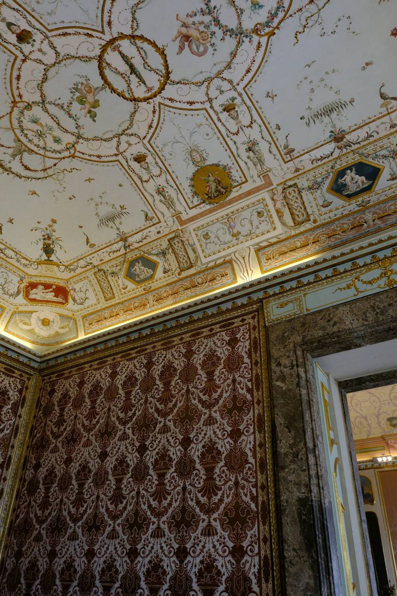
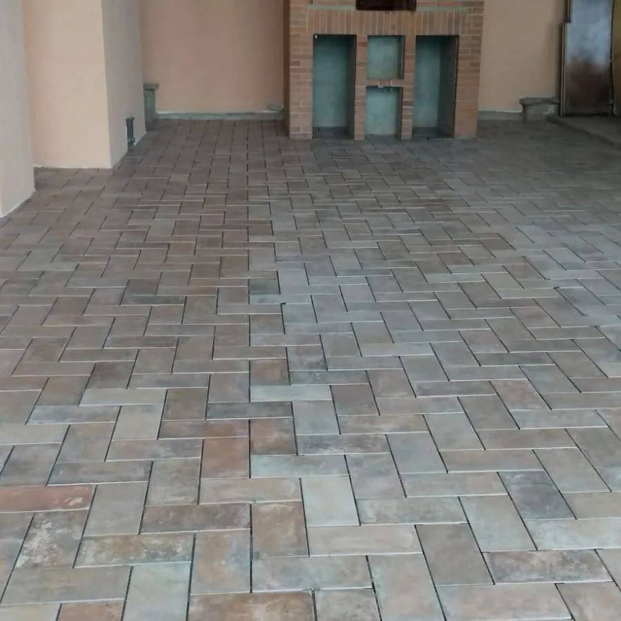
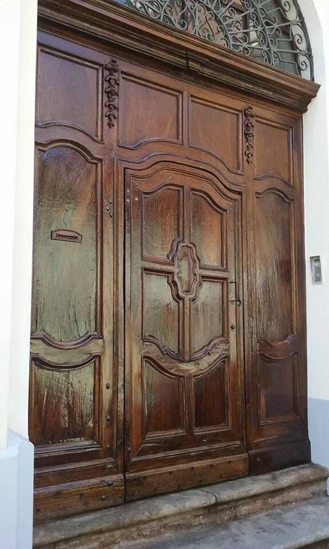
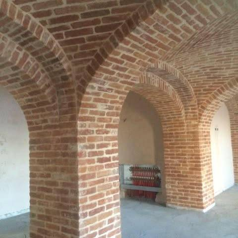
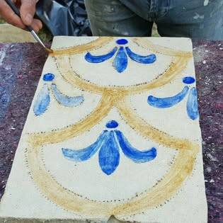

01
Decorazioni a calce
Motivi dipinti a mano su intonaco, colori e finiture per pareti e soffitti.
Torino · Via Giacomo Dina
Decorazioni a calce, pavimenti, restauro di portoni e lavori edili. Giuseppe Gallo Cassarino, a Torino.

Servizi

Motivi dipinti a mano su intonaco, colori e finiture per pareti e soffitti.

Cotto, legno, marmo e ciottoli: posa a disegno, anche con intarsi.

Portoni in legno, superfici e dettagli di case e palazzi da riportare com'erano.

Muri, volte e ristrutturazioni, con la stessa cura delle finiture.
Lavori

Il titolare
Una ditta individuale di Torino: un titolare, un numero da chiamare. Opere edili, pavimenti e, soprattutto, finiture e decori a calce, il lavoro che si vede di più nelle foto della nostra pagina.
Per un preventivo basta un messaggio con due foto della stanza, del pavimento o del portone.
Altre foto sulla pagina FacebookCome si parte
Ci mandate la stanza, la parete o il pavimento e due righe su cosa volete.
Vediamo il lavoro dal vivo, materiali e colori compresi.
Dalla preparazione del fondo all'ultima mano.
Contatto